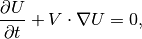
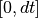
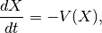
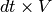

A pure convection method¶
A method to compute a pure convection is defined in the file getfem/getfem_convect.h. The call of the function is:
getfem::convect(mf, U, mf_v, V, dt, nt, option = CONVECT_EXTRAPOLATION);
where mf is a variable of type getfem::mesh_fem, U is a vector which represent the field to be convected, mf_v is a getfem::mesh_fem for the velocity field, V is the dof vector for the velocity field, dt is the pseudo time of convection and nt the number of iterations for the computation of characteristics. option is an option for the boundary condition where there is a re-entrant convection. The possibilities are getfem::CONVECT_EXTRAPOLATION (extrapolation of the field on the nearest element) or getfem::CONVECT_UNCHANGED (no change of the value on the boundary).
The method integrate the partial differential equation

on the time intervall .
The method used is of Galerkin-Characteristic kind. It is a very simple version which is inconditionnally stable but rather dissipative. See [ZT1989] and also the Freefem++ documentation on convect command.
The defined method works only if mf is a pure Lagrange finite element method for the moment. The principle is to convect backward the finite element nodes by solving the ordinary differential equation:

with an initial condition corresponding to each node. This convection is made with nt steps. Then the solution is interploated on the convected nodes.
In order to make the extrapolation not too expensive, the product  should not be too large.
Note that this method can be used to solve convection dominant problems coupling it with a splitting scheme.

前のトピックへ
次のトピックへ
The model description and basic model bricks
Download
Main documentations
- GetFEM++ User documentation
- Python Interface
- Matlab Interface
- Scilab Interface
- Gmm++
- GetFEM++ project